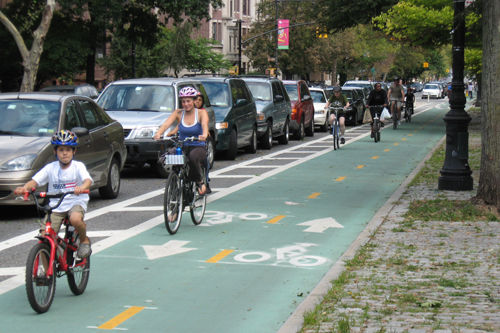
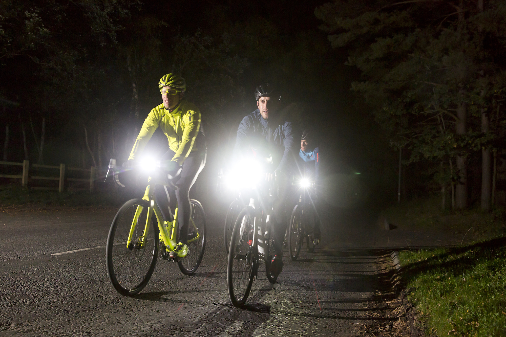
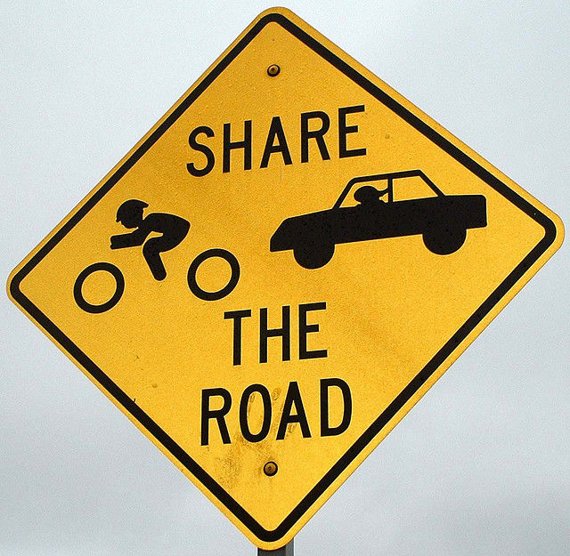
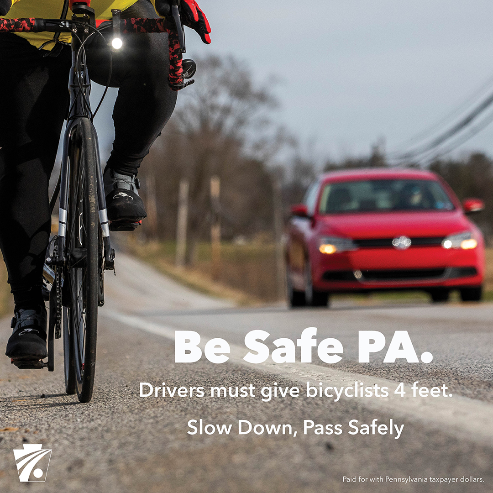
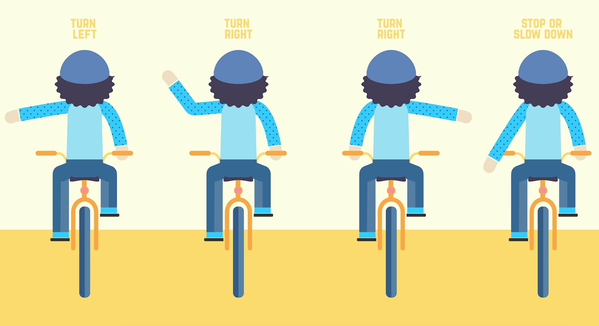
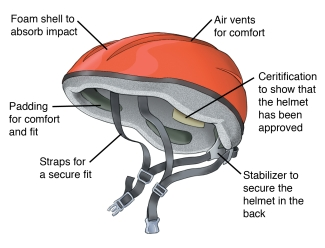

Bikers must recognize that riding a bike in public a privilege. To keep such a privilege intact, all cyclists must act in an ethical manner. For a biker, acting ethically
includes but is not limited to following the law, having a good attitude, sharing the road, practicing safety rules, and respecting others. Acting ethically will improve
your biking experience and help preserve the public view of bikers such that the tradition of biking may continue into future generations.
Following the Law
The law is the ultimate code of ethics. Those who break the law do not act ethically. According to Pennsylvania law, "pedal cycles" are considered to be vehicles and take on
the same responsibility and rights as cars and motorcycles. Being ignorant to traffic laws as a cyclist will still put the cyclist at fault in the event of an accident.
Listed below are laws bikers should follow to keep their image intact.
Cyclists should not lane split on general access roads. Lane splitting is only permitted in bike lanes.
Bikes that are used at night are required to be equipped with a frontward facing light and reflectors visible from the side at a maximum of 500 feet away.
A signaling bell may or may not be required in your local area. Either way, a smart biker always has one.
Bikers do not have the right of way on sidewalks. This privilege is given to pedestrians. Upon approaching a pedestrian, a cyclist must give an audible signal.
Due to the high level of foot traffic in business areas, bikers are not permitted to ride on the sidewalks in these locations.
Parking is not allowed in an area where there is potential to interfere with other vehicles.


Sharing the Road
The road is a public infrastructure provided by the government. For this reason, cyclists may encounter cars, motorcycles, and people on the road. Cyclists are expected
to understand this and know how to safely interact, or avoid, these obstacles.
Cyclists should try to ride on the shoulder of the road. If a bike lane is provided, these should be used first.
Bikes may move out of the right lane temporarily to overtake a vehicle, clear an obstruction, or to make a left turn.
It is okay to run red lights under the condition that it is safe and the sensors are not detecting the cyclist(they often do not).
Bikers must recognize that it is the motorist's responsibility to provide at least 4 feet of distance between each other.
Bikers must also recognize that motorists are permitted to pass them in a no passing zone.
For safety reasons, is vital to know that no one is required to yield to a bike on a crosswalk.


Practicing Safety Rules
Listed below are some general rules and tips that make cycling safer.
Wear a helmet. If you are not yet 12 years old you are legally required to do so.
Entirely avoid riding on freeways. It is illegal to do so as they are restricted to motorists only.
Use hand signals. Extend your respective arm horizontally in the direction you wish to turn. You may also lift your left arm vertically to signal a right turn.
Be prepared. Carry a pump, first aid kit, water, wear bright clothes, and bring tools.
Obey traffic laws.
Never bike against traffic.


Respecting Others
We are all human. As such mistakes will happen. When something inevitably happens act in a respectful manner and do not have any "road rage." If need be
call the police and report any inappropriate behavior. Most importantly, have fun.
Having a Good Attitude
Biking is all about enjoying a healthy lifestyle. This includes both physically and mentally. If a biker goes into their commute with a positive attitude,
they will most likely act safer than if they did not. They will also be able to think more clearly which will result in keeping themselves and all others
on the road safe and alive.